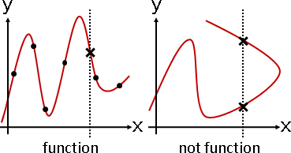
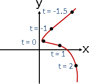
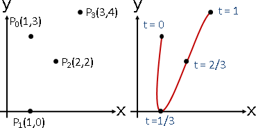
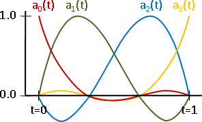
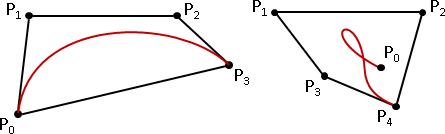
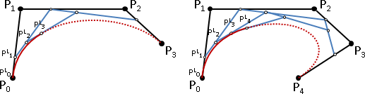

Curve
Curve
想要建立曲線，可以使用多項式函數，平滑柔順。
這種方式有個嚴重的問題：曲線是一個函數，每個X值只對應一個Y值；曲線不能到處亂繞，只能左右伸展。
要解決這個問題，最簡單的方法，就是分別處理X軸與Y軸。用一個多項式專門處理X座標，用另一個多項式專門處理Y座標。
例如 x(t) = 1 + 2t¹ + 3t² - t³ y(t) = 2 - t¹ + t² - t³ t代入-0.1，得到一個座標(x(-0.1), y(-0.1)) = (0.831, 2.111) t代入 0，得到一個座標(x(0) , y(0) ) = (1, 2) t代入 0.1，得到一個座標(x(0.1) , y(0.1) ) = (1.229, 1.909)
這個手法叫做「參數式Parametric Equation」，t就是參數。高中數學、微積分、線性代數課程都有提到，既基礎又常見，不是什麼艱深晦澀的玩意。
引入Control Point以操控曲線
想要操控曲線，最便捷的方式，就是點上幾個點，然後運用「多項式內插」，得到一條穿過這些點的曲線。操控點的位置，就操控了曲線的位置。
電腦擅於處理大量資料。我們可以製作非常多條曲線，讓曲線銜接曲線，就得到各式各樣的形狀了。因此，通常我們不會製作無限長的曲線，其實製作一小段曲線就夠了。
我們習慣讓t值的範圍是0到1。設定三個點、用二次多項式實施內插，三個點的t值分別是0、0.5、1。或者設定四個點、用三次多項式實施內插，四個點的t值分別是0、1/3、2/3、1。
一次多項式只能產生直線，二次以上的多項式就足以產生曲線。
引入Knot Point以微調曲線

自由調整控制點的參數t，不一定要等分。曲線仍然穿過所有控制點，但是曲線形狀會改變。
額外建立一條數線，範圍是t = 0到t = 1。在數線上放置四個樞紐點，分別調控四個控制點的參數t。第一個樞紐點固定於t = 0，最後一個樞紐點固定於t = 1。
簡單起見，以下暫不考慮樞紐點。
採用Vandermonde Matrix演算法，進行多項式內插。
一、設定內插多項式。
平面上四個點 (1,3) (1,0) (2,2) (3,4) X座標、Y座標分別處理，採用三次（四項）多項式。 x(t) = a₀t⁰ + a₁t¹ + a₂t² + a₃t³ y(t) = b₀t⁰ + b₁t¹ + b₂t² + b₃t³
二、求得內插多項式的係數。
首先處理X座標！
令四個點對應的t值是 t = 0, 1/3, 2/3, 1。
也就是說 x(0) = 1 , x(1/3) = 1 , x(2/3) = 2 , x(1) = 3
[ 0⁰ 0¹ 0² 0³ ] [ a₀ ] [ 1 ]
[ (1/3)⁰ (1/3)¹ (1/3)² (1/3)³ ] [ a₁ ] = [ 1 ]
[ (2/3)⁰ (2/3)¹ (2/3)² (2/3)³ ] [ a₂ ] [ 2 ]
[ 1⁰ 1¹ 1² 1³ ] [ a₃ ] [ 3 ]
-1
[ a₀ ] [ 0⁰ 0¹ 0² 0³ ] [ 1 ]
[ a₁ ] = [ (1/3)⁰ (1/3)¹ (1/3)² (1/3)³ ] [ 1 ]
[ a₂ ] [ (2/3)⁰ (2/3)¹ (2/3)² (2/3)³ ] [ 2 ]
[ a₃ ] [ 1⁰ 1¹ 1² 1³ ] [ 3 ]
[ a₀ ] [ 1 0 0 0 ] [ 1 ]
[ a₁ ] = [ -5.5 9 -4.5 1 ] [ 1 ]
[ a₂ ] [ 9 -22.5 18 -4.5 ] [ 2 ]
[ a₃ ] [ -4.5 13.5 -13.5 4.5 ] [ 3 ]
無論一開始給定哪四個點，矩陣都是固定不變的。
無論一開始給定哪四個點，往後都可以直接套用公式，求得多項式係數。
[ a₀ ] [ 1 0 0 0 ] [ x₀ ]
[ a₁ ] = [ -5.5 9 -4.5 1 ] [ x₁ ]
[ a₂ ] [ 9 -22.5 18 -4.5 ] [ x₂ ]
[ a₃ ] [ -4.5 13.5 -13.5 4.5 ] [ x₃ ]
a₀ = 1 x₀ + 0 x₁ + 0 x₂ + 0 x₃
a₁ = -5.5 x₀ + 9 x₁ + -4.5 x₂ + 1 x₃
a₂ = 9 x₀ + -22.5 x₁ + 18 x₂ + -4.5 x₃
a₃ = -4.5 x₀ + 13.5 x₁ + -13.5 x₂ + 4.5 x₃
三、曲線座標的公式。
內插多項式的係數公式
a₀ = 1 x₀ + 0 x₁ + 0 x₂ + 0 x₃
a₁ = -5.5 x₀ + 9 x₁ + -4.5 x₂ + 1 x₃
a₂ = 9 x₀ + -22.5 x₁ + 18 x₂ + -4.5 x₃
a₃ = -4.5 x₀ + 13.5 x₁ + -13.5 x₂ + 4.5 x₃
代回到內插多項式
x(t) = a₀t⁰ + a₁t¹ + a₂t² + a₃t³
得到曲線座標的公式
x(t) = -4.5 (t-1/3) (t-2/3) (t-1) x₀
+ 13.5 (t-0) (t-2/3) (t-1) x₁
+ -13.5 (t-0) (t-1/3) (t-1) x₂
+ 4.5 (t-0) (t-1/3) (t-2/3) x₃
代入各種t值（範圍是0≤t≤1），得到曲線上每個點的X座標。
保持矩陣模樣的推導方式。教科書喜歡這樣推導。
x(t) = a₀t⁰ + a₁t¹ + a₂t² + a₃t³
[ a₀ ]
= [ t⁰ t¹ t² t³ ] [ a₁ ] 寫成點積
[ a₂ ]
[ a₃ ]
[ 1 0 0 0 ] [ x₀ ]
= [ t⁰ t¹ t² t³ ] [ -5.5 9 -4.5 1 ] [ x₁ ] 內插多項式的係數
[ 9 -22.5 18 -4.5 ] [ x₂ ]
[ -4.5 13.5 -13.5 4.5 ] [ x₃ ]
[ x₀ ]
= [ a₀(t) a₁(t) a₂(t) a₃(t) ] [ x₁ ] 前面兩個矩陣先相乘
[ x₂ ]
[ x₃ ]
其中
a₀(t) = -4.5 (t-1/3) (t-2/3) (t-1)
a₁(t) = 13.5 (t-0) (t-2/3) (t-1)
a₂(t) = -13.5 (t-0) (t-1/3) (t-1)
a₃(t) = 4.5 (t-0) (t-1/3) (t-2/3)
四、X座標、Y座標分別處理，如法炮製。
x(t) = -4.5 (t-1/3) (t-2/3) (t-1) x₀
+ 13.5 (t-0) (t-2/3) (t-1) x₁
+ -13.5 (t-0) (t-1/3) (t-1) x₂
+ 4.5 (t-0) (t-1/3) (t-2/3) x₃
y(t) = -4.5 (t-1/3) (t-2/3) (t-1) y₀
+ 13.5 (t-0) (t-2/3) (t-1) y₁
+ -13.5 (t-0) (t-1/3) (t-1) y₂
+ 4.5 (t-0) (t-1/3) (t-2/3) y₃
五、代入各種t，得到曲線座標。
快速回顧。
一、欲使曲線平滑，採用多項式。 二、欲建立二維平面的曲線，X座標、Y座標分開處理，採用兩個多項式。 三、欲穿過四個點，採用三次多項式。 四、代入0≤t≤1，畫出一條曲線。 五、挪動四個控制點，畫出各種曲線。
採用Lagrange Interpolation演算法，進行多項式內插。
不必算得要死不活，輕鬆得到曲線座標公式：四個多項式a₀(t) a₁(t) a₂(t) a₃(t)的加權平均值，權重是四個控制點的座標。
x(t) = a₀(t) x₀ + a₁(t) x₁ + a₂(t) x₂ + a₃(t) x₃ a₀(t) = -4.5 (t-1/3) (t-2/3) (t-1) a₁(t) = 13.5 (t-0) (t-2/3) (t-1) a₂(t) = -13.5 (t-0) (t-1/3) (t-1) a₃(t) = 4.5 (t-0) (t-1/3) (t-2/3)
Hermite Curve
改用兩個點以及這兩個點的斜率來建立曲線。特色是：曲線與曲線之間，得共用端點、共用斜率，平順銜接，讓銜接點一次可微。
平面上有兩個點 (x₀,y₀) (x₁,y₁) 以及這兩個點的斜率 (dx₀,dy₀) (dx₁,dy₁)
使用三次多項式（四項）作為內插多項式，製作依序穿過這兩點的曲線。
x (t) = a₀t⁰ + a₁t¹ + a₂t² + a₃t³
y (t) = b₀t⁰ + b₁t¹ + b₂t² + b₃t³
x'(t) = a₁t⁰ + 2a₂t¹ + 3a₃t²
y'(t) = b₁t⁰ + 2b₂t¹ + 3b₃t²
處理X座標
這兩點對應的t值分別是 t = 0, 1
也就是說 x(0) = x₀ , x(1) = x₁ , x'(0) = dx₀ , x'(1) = dx₁
x (0) = x₀ = a₀0⁰ + a₁0¹ + a₂0² + a₃0³
x (1) = x₁ = a₀1⁰ + a₁1¹ + a₂1² + a₃1³
x'(0) = dx₀ = a₁0⁰ + 2a₂0¹ + 3a₃0²
x'(1) = dx₁ = a₁1⁰ + 2a₂1¹ + 3a₃1²
[ 1 0 0 0 ] [ a₀ ] [ x₀ ]
[ 1 1 1 1 ] [ a₁ ] = [ x₁ ]
[ 0 1 0 0 ] [ a₂ ] [ dx₀ ]
[ 0 1 2 3 ] [ a₃ ] [ dx₁ ]
[ a₀ ] [ 1 0 0 0 ] [ x₀ ]
[ a₁ ] = [ 0 0 1 0 ] [ x₁ ]
[ a₂ ] [ -3 3 -2 -1 ] [ dx₀ ]
[ a₃ ] [ 2 -2 1 1 ] [ dx₁ ]
a₀ = x₀
a₁ = dx₀
a₂ = -3x₀ + 3x₁ - 2dx₀ - dx₁
a₃ = 2x₀ + -2x₁ + dx₀ + dx₁
x(t) = (2t³ - 3t² + 1) * x₀
+ (t³ - 2t² + t) * dx₀
+ (-2t³ + 3t²) * x₁
+ (t³ - t²) * dx₁
Bézier Curve四個點的版本
使用四個點，推導出兩個點與兩個點的斜率。特色是：在使用者介面當中，控制點的位置，比起控制斜率大小來得直覺多了。
Bézier Curve應用廣泛。例如Microsoft PowerPoint的曲線：http://kentingmylove.blogspot.tw/2013/11/curve.html。例如字體設計：http://shape.method.ac/。
平面上有四個點 (1,3) (1,0) (2,2) (3,4)
(1,3) (3,4) 是曲線穿過的點，對應的t值分別是 t = 0 , 1
(1,0) (2,2) 用來計算斜率，對應的t值分別是 t = 1/3 , 2/3
[(1,0) - (1,3)] ÷ 1/3 , [(3,4) - (2,2)] ÷ 1/3 是這兩個點的斜率。
[ a₀ ] [ 1 0 0 0 ] [ x₀ ]
[ a₁ ] = [ -3 3 0 0 ] [ x₁ ]
[ a₂ ] [ 3 -6 3 0 ] [ x₂ ]
[ a₃ ] [ -1 3 -3 1 ] [ x₃ ]
x(t) = (-t³ + 3t² - 3t + 1) * x₀
+ (3t³ - 6t² + 3t) * x₁
+ (-3t³ + 3t²) * x₂
+ (t³) * x₃
Bézier Curve
相鄰的兩個控制點求加權平均值，遞推下去。
給定t，0≤t≤1，每條線段在t:(1-t)的地方取點，依序連線；遞推下去，得到一點，做為曲線上一點。窮舉各種t，得到一條曲線。
順便介紹幾個重要的數學性質。
凸包：曲線永遠在控制點的「凸包」內部。
碎形：從切點切開，兩段曲線都是Bézier Curve；左曲線的控制點，即是每一層的最左線段的中繼點。右曲線亦如是。
平滑：嘗試推導曲線公式。以加權平均值，得到中繼點。不斷遞推，最後證明曲線公式是多項式函數，恰好符合二項式定理、巴斯卡三角形，稱做「Bernstein Polynomials」。多項式的最高次方（平滑程度），等於控制點的數目減一。
4 points, layer0: p₀ p₁ p₂ p₃ layer1: q₀ = p₀(1-t) + p₁t q₁ = p₁(1-t) + p₂t q₂ = p₂(1-t) + p₃t layer2: r₀ = q₀(1-t) + q₁t = (p₀(1-t) + p₁t)(1-t) + (p₁(1-t) + p₂t)t = p₀(1-t)(1-t) + p₁2(1-t)t + p₂tt r₁ = p₁(1-t)(1-t) + p₂2(1-t)t + p₃tt layer3: s₀ = r₀(1-t) + r₁t = (p₀(1-t)(1-t) + p₁2(1-t)t + p₂tt)(1-t) + (p₁(1-t)(1-t) + p₂2(1-t)t + p₃tt)t = p₀(1-t)(1-t)(1-t) + p₁3(1-t)(1-t)t + p₂3(1-t)tt + p₃tt
(1-t)和t乘開，即是上個小節的格式。
s₀ = (-t³ + 3t² - 3t + 1) * p₀ + (3t³ - 6t² + 3t) * p₁ + (-3t³ + 3t²) * p₂ + (t³) * p₃ 此例當中，四個控制點的曲線公式，是三次多項式函數（對t而言）。
有興趣的讀者請繼續學習其他相關主題：
http://pomax.github.io/bezierinfo/
B-spline Curve
每條線段取點時，改以樞紐點的間距當作權重。樞紐點多於控制點，微調曲線形狀。詳情請見：
http://www.enseignement.polytechnique.fr/informatique/INF555/Slides/lecture3.pdf http://www.cad.zju.edu.cn/home/zhx/GM/006/00-bscs1.pdf http://www.cad.zju.edu.cn/home/zhx/GM/007/00-bscs2.pdf
basis functions皆是spline：數個多項式函數銜接而成的函數。有人改稱basis splines，簡稱B-splines。這是曲線名稱的由來。
Non-uniform Rational B-spline（NURBS）
B-spline Curve的每個控制點擁有權重；權重越大，曲線越靠近控制點。請讀者自行鑽研。
形容詞uniform，意思是樞紐點皆等距。
形容詞rational，意思是basis functions取加權平均值。也有人解釋成「齊次座標」的加法。
UVa 12565